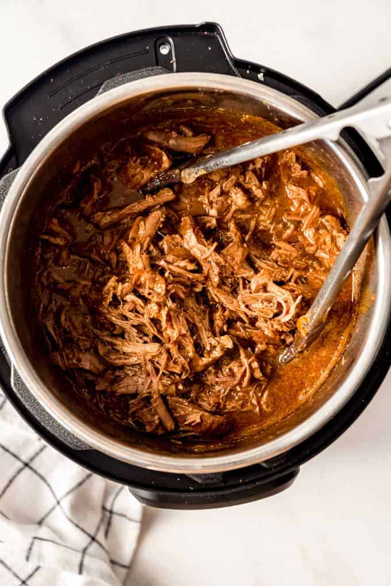

Pork Barbacoa

Description
Lasagna is the ultimate Italian comfort food and it’s the perfect make-ahead meal to enjoy on busy weekdays or even laid back weekends. Tender pasta noodles are layered with a delicious meat sauce, creamy ricotta, and mozzarella.
The best lasagna recipe includes two types of meat, ground beef and pork sausage. There are three types of cheese: mozzarella, paremsan, and ricotta.
Ingredients
-
Meat
- 3-5 pounds pork shoulder butt roast
- 1 can Coca-Cola or Dr. Pepper not diet, divided
- ¼ cup brown sugar
- ¼ cup water/li>
- 1 teaspoon salt
- ½ teaspoon garlic powder
- ½ teaspoon chili powder
- ¼ teaspoon pepper
-
Sauce
- 1 can Coca-Cola or Dr. Pepper not diet
- 10 ounces red enchilada sauce
- 4 ounces diced green chiles
- ¾ cup brown sugar
-
Serving
- Flour tortillas
- Chopped romaine lettuce
- Pico de gallo
- Guacamole
- Fresh cilantro
- Crumbled cotija or feta cheese
- Crunchy tortilla strips
- Cilantro lime rice
- Black Beans
- Cilantro Lime Dressing
Steps
- In a large, heavy duty Ziploc bag, combine the pork roast with one can of Coke and ¼ cup of the brown sugar. Seal tightly and marinade in the refrigerator anywhere from 2 hours to overnight. (UPDATE: I usually skip this step and go straight to cooking the meat these days. It seems not to make a substantial difference and the recipe is easier without marinading, but the choice is up to you!)
- Once the pork roast has had a chance to marinate for at least 2 hours, transfer the pork, along with the marinade, to a crock pot. Add the water and sprinkle the salt, garlic powder, pepper and chili powder over the pork roast. Cover and cook for 3 to 4 hours on high (or 6 to 8 hours on low), until the pork is tender enough to be easily shredded with a fork.
- While the pork cooks, combine the remaining can of Coke and the remaining ¾ cup of brown sugar in a blender, along with the can of diced green chilies and red enchilada sauce. Blend until smooth, then set aside.
- Remove the pork from the crock pot and discard the cooking liquid. Shred the pork, removing any fat, and return it to the crock pot, along with the enchilada sauce mixture. Cover and cook for 1 to 2 hours on low, then check seasoning to see if more salt is needed. Serve in salads, burritos or tacos!
HOME